Osteology of the Distal Upper Extremity & Clinical Approach to the Elbow
- The elbow is a synovial hinge (flexion and extension only). The true hinge is humeroulnar (trochlea in the trochlear notch); humeroradial (capitulum on the radial head) also articulates. The capsule is weak in front and behind so it can hinge, and reinforced medially (UCL) and laterally (RCL).
- The proximal radioulnar joint is a pivot inside the elbow capsule: the anular ligament hugs the radial head. In pronation the radius crosses over the ulna, turning at the proximal and distal radioulnar joints; the interosseous membrane (a syndesmosis) holds the two bones together.
- Carpals, lateral to medial, proximal row then distal: “Some Lovers Try Positions That They Can't Handle”. Scaphoid is the most fractured; lunate the most dislocated (and it can compress the median nerve); trapezium sits at the thumb.
- Posterior elbow dislocation (usually FOOSH) is a red flag: capsule and ligaments, skin, the ulnar nerve and compartment syndrome. Treat with closed reduction and a splint at 90°, or ORIF.
- Nursemaid's elbow is radial head subluxation in a child under 5 after a pull on the arm. The child won't use the arm and holds it against the body. No imaging is needed unless you suspect something else. Treatment is closed reduction by pronation + extension; no cast.
- UCL injury: overhead throwers, medial pain, no end point on valgus stress. Physio first; Tommy John reconstruction only for functional goals. Olecranon bursitis (from leaning on the elbow) is benign unless it's septic: red, hot, systemic → aspirate and give antibiotics.
Learning Objectives
- Identify the distinguishing features of the bones and joints of the upper extremity and relate them to their appearance on plain radiographs.
- Create a differential diagnosis and management plan for upper extremity complaints: numbness, weakness, pain and loss of range of motion.
- Describe the anatomic basis of common elbow and arm complaints: medial and lateral epicondylitis, distal biceps rupture, olecranon bursitis, ulnar neuropathy, arthritis, subluxation/dislocation and UCL injury.
- Outline an approach to diagnosis and management (non-pharmacologic, pharmacologic and surgical) for these conditions.
Dr. Charys Martin (osteology and joints, 41 min, plus a knowledge-check story) and Dr. Caitlin Cassidy (elbow joint problems, 27 min), 68 minutes in all. This part covers the bone, joint and ligament problems. The muscle and nerve problems come later in the week: epicondylitis and distal biceps in 8.6, ulnar neuropathy in 8.7.
Bones and Joints
Dr. Martin's recording.
Bones of the Elbow and Forearm
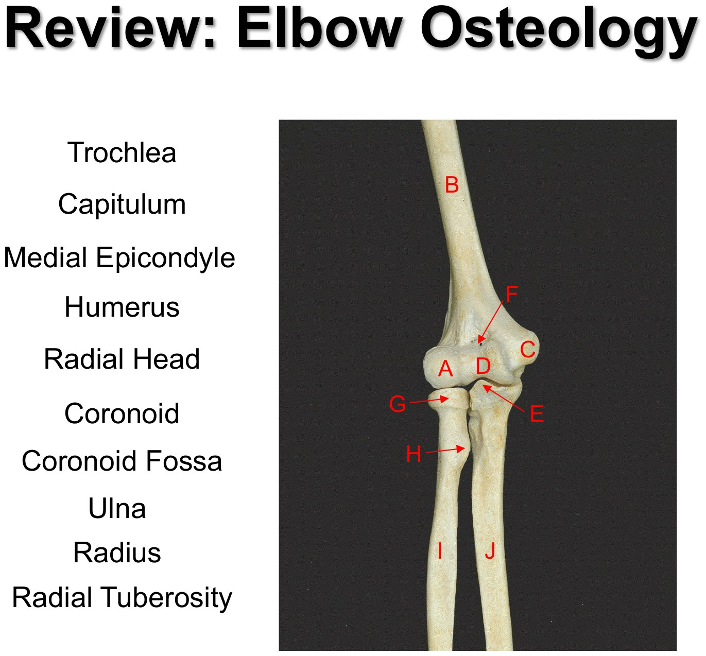
| Bone | Landmark | What it's for |
|---|---|---|
| Humerus | Radial (spiral) groove | Posterior shaft; the radial nerve and profunda brachii run in it |
| Medial epicondyle | Common flexor origin; the ulnar nerve passes behind it | |
| Lateral epicondyle | Common extensor origin | |
| Capitulum (lateral) | Articulates with the radial head | |
| Trochlea (medial) | Articulates with the trochlear notch of the ulna | |
| Coronoid / olecranon fossae | Take the coronoid process in full flexion / the olecranon in full extension | |
| Radius (lateral, shorter) | Head | On the capitulum and the radial notch of the ulna; pivots in the anular ligament. Using it to tell radius from ulna also tells you lateral from medial. |
| Radial tuberosity | Biceps insertion | |
| Ulna (medial, longer, the stabilizer) | Olecranon | The point of the elbow; triceps insertion |
| Coronoid process | Brachialis insertion | |
| Trochlear notch | Between the olecranon and coronoid; holds the trochlea | |
| Radial notch | Lateral side of the coronoid; holds the radial head |
| Fracture | Typical patient or mechanism | Structure at risk |
|---|---|---|
| Surgical neck of the humerus | Elderly with osteoporosis; low-energy fall onto the hand | Axillary nerve |
| Shaft (transverse) | Direct blow to the arm | Radial nerve ± deep brachial artery |
| Distal humerus | Median nerve | |
| Medial epicondyle | Ulnar nerve |
This fracture–nerve table is from Dr. Martin's mini-text.
The Elbow Joint
A synovial hinge joint, uniaxial: flexion and extension only. Of its two articulations, the humeroulnar does the hinging; the humeroradial articulates but the radius's real job is the separate proximal radioulnar joint. With the trochlea in its notch it's more stable than the glenohumeral joint, but it still won't hold together without its soft tissues.
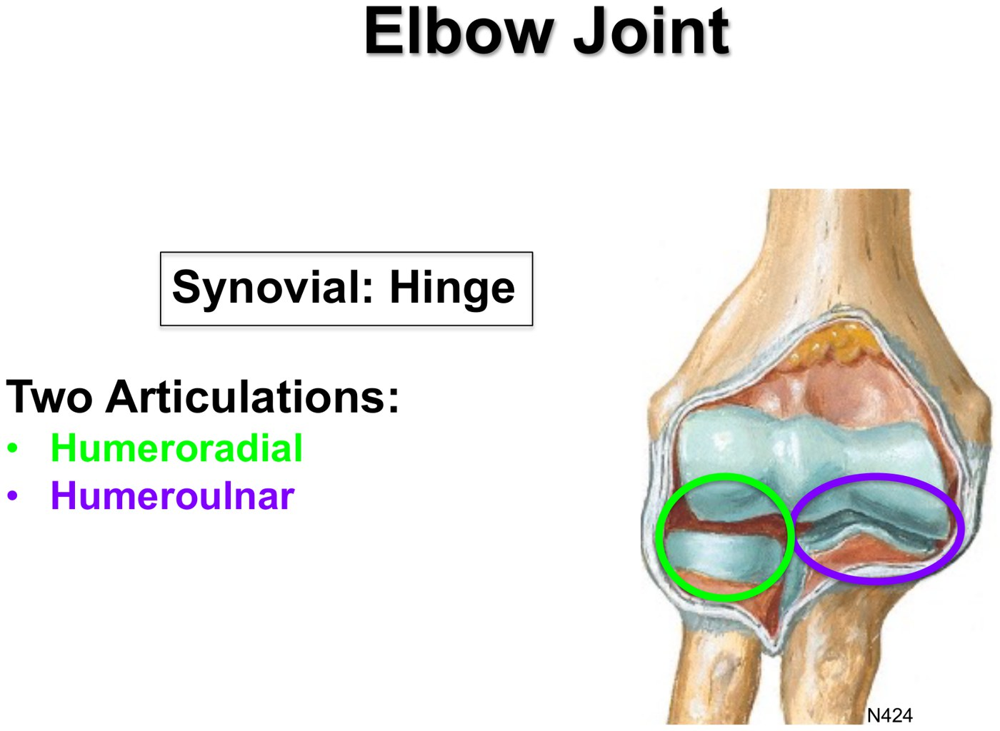
Hinge with two articulations. Slide from the deck (Netter).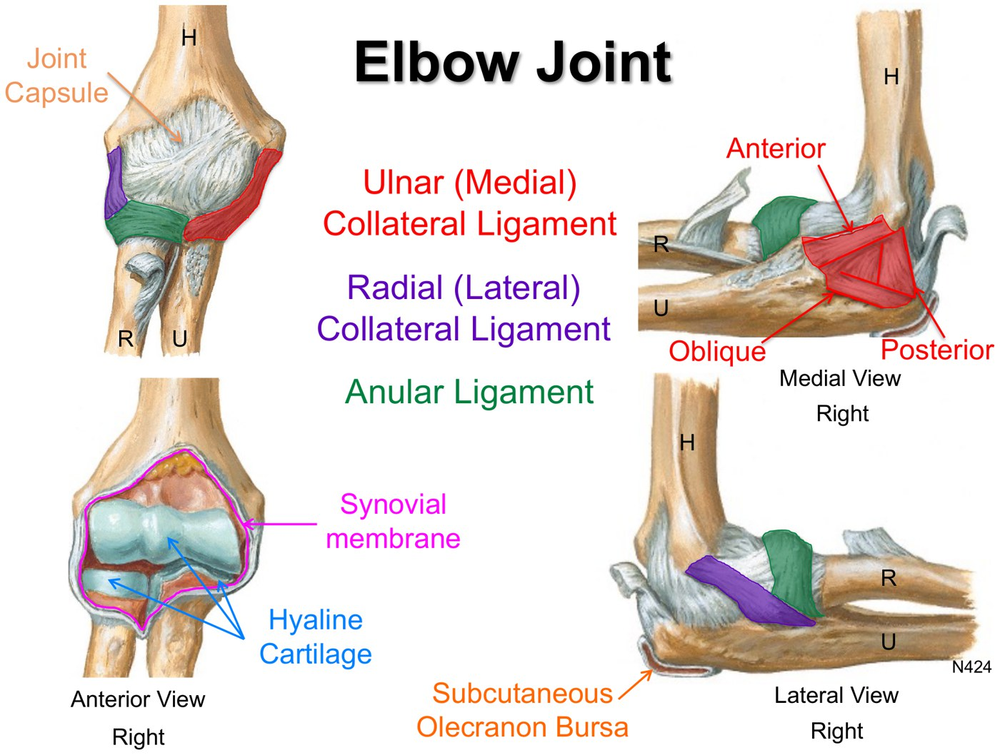
Capsule and ligaments. Slide from the deck (Netter).| Structure | Attachments | Key point |
|---|---|---|
| Capsule | Weak anteriorly and posteriorly (lax, to allow the hinge); reinforced medially and laterally by the collateral ligaments. Muscles strengthen the front and back. | |
| Ulnar (medial) collateral ligament | Medial epicondyle → coronoid process and olecranon | Three bands: anterior (cord-like, strongest), posterior (fan-like, weakest), oblique (deepens the socket for the trochlea) |
| Radial (lateral) collateral ligament | Lateral epicondyle → blends with the anular ligament | |
| Anular ligament | From the ulna, round the radial head, back to the ulna | Part of the proximal radioulnar joint: it lets the head rotate |
| Subcutaneous olecranon bursa | Between the olecranon and the skin | Stops the skin rubbing over the olecranon all day |
Use ulnar and radial collateral ligament rather than medial and lateral: every hinge joint has “medial and lateral collateral ligaments”, and said alone those usually mean the knee.
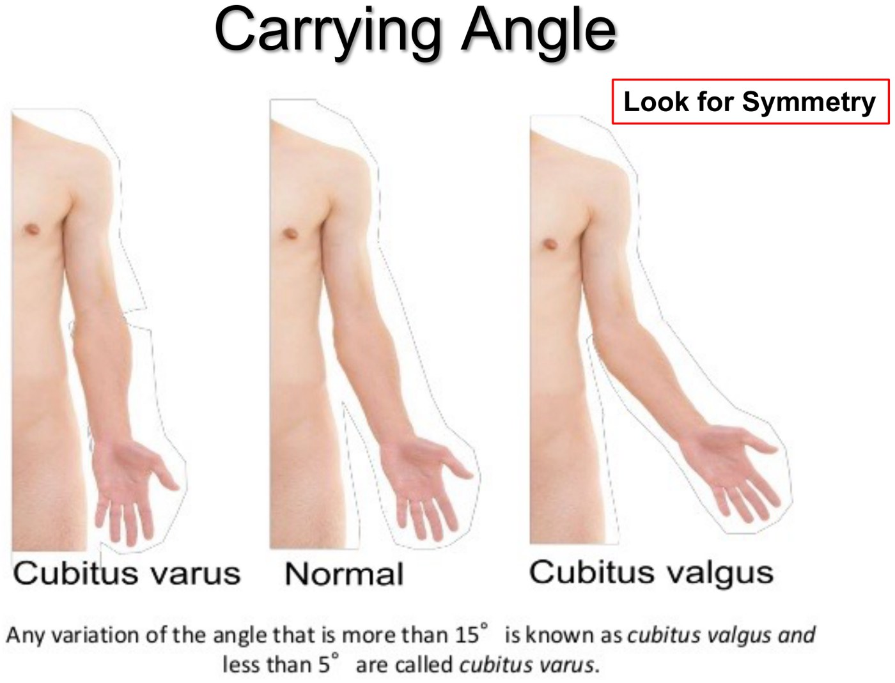
Carrying angle: over 15° is valgus, under 5° varus. Slide from the deck.The carrying angle is the normal outward angle of the forearm from the arm in extension. It's larger in women (one theory: wider hips; another: it makes cradling a baby easier). What matters clinically is symmetry with the other side: an abnormal angle, increased (cubitus valgus, over 15°) or decreased (cubitus varus, under 5°), is usually from soft-tissue problems at the elbow.
The Radioulnar Joints
| Joint | Type | Detail |
|---|---|---|
| Proximal | Synovial pivot | Radial head in the radial notch of the ulna, held by the anular ligament. It sits inside the elbow's capsule and shares its synovial membrane and fluid. |
| Intermediate | Syndesmosis | The interosseous membrane. It moves with the radius but its job is to hold the bones together. |
| Distal | Synovial pivot | The ulnar head in a notch on the radius |
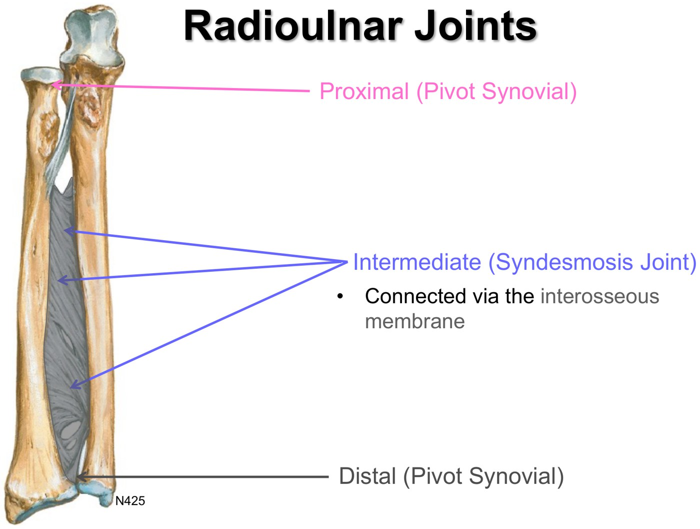
Three radioulnar joints. Slide from the deck (Netter).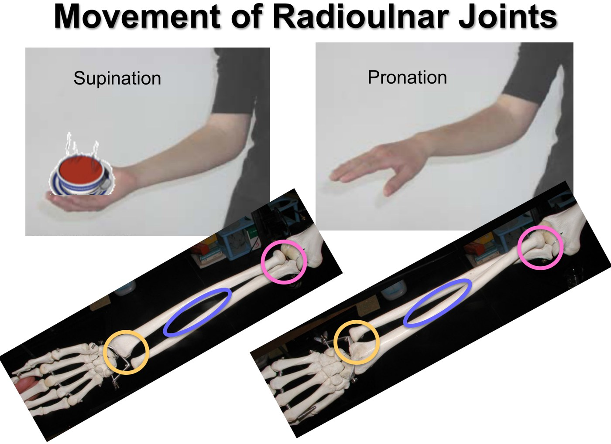
Supination holds the bowl of soup; in pronation the radius crosses the ulna. Slide from the deck.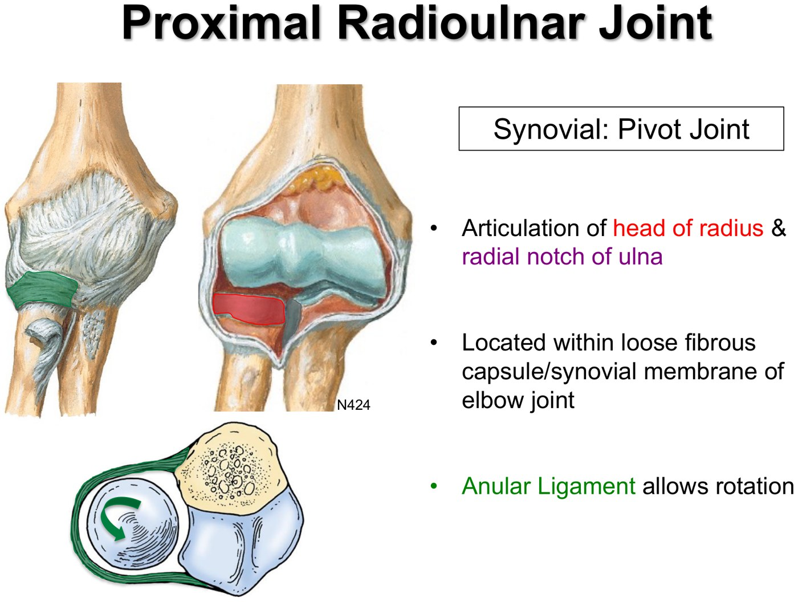
Proximal radioulnar joint and the anular ligament. Slide from the deck (Netter).Put a finger on your distal radius and pronate: it moves from the lateral side to the medial side as the radius crosses the ulna. People usually fall onto a pronated outstretched hand, with the bones crossed, which loads the distal radius and the carpals. Dr. Martin's counter-intuitive advice is to land on the ulnar border of the forearm, the strong ridge you can feel down its medial side: bruises and road rash, but fewer fractures.
The Wrist and Hand
At the wrist the sizes flip: the radius is the bigger bone and makes most of the wrist joint, while the ulna's head is at its distal end (the radius's head is proximal). Feel the ulnar styloid on the posteromedial wrist and the larger radial styloid laterally, just above the thumb.
| Row (lateral → medial) | Carpal | Name means | Clinical point |
|---|---|---|---|
| Proximal | Scaphoid | Boat | Most commonly fractured carpal |
| Lunate | Moon | Most commonly dislocated carpal (still uncommon); can compress the median nerve in the carpal tunnel | |
| Triquetrum | Three corners | ||
| Pisiform | Pea | Forms the ulnar canal with the hook of the hamate | |
| Distal | Trapezium | Four-sided | “Trapezium at the thumb”: articulates with the 1st metacarpal |
| Trapezoid | Four-sided | ||
| Capitate | Head | ||
| Hamate | Hooked | The hook projects anteriorly (denser on x-ray) and anchors soft tissue; forms the ulnar canal with the pisiform |
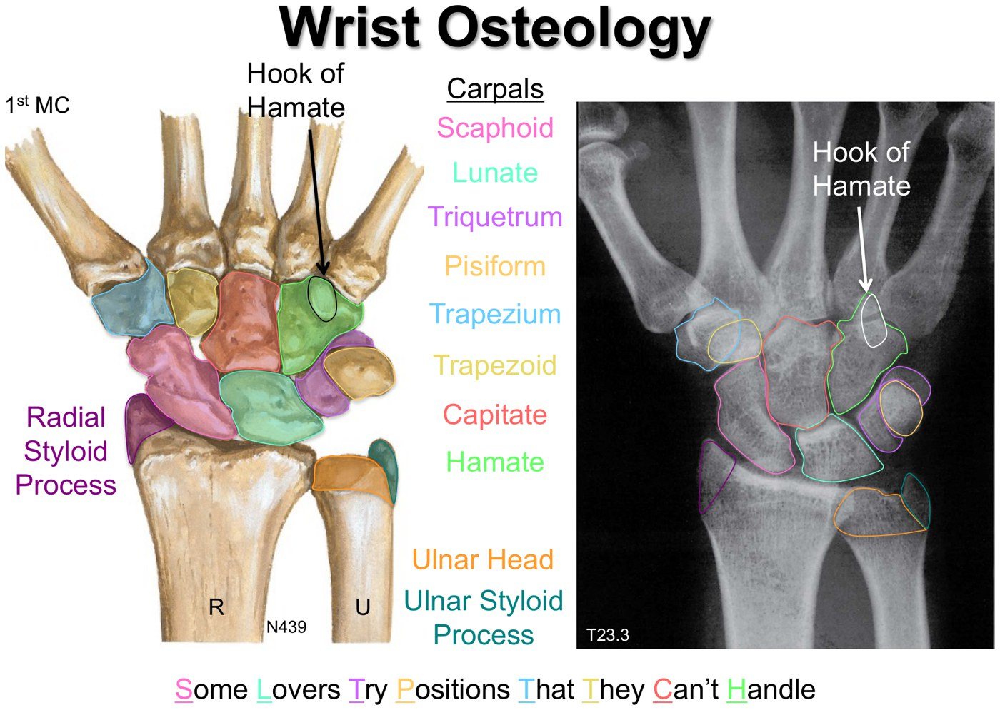
The carpals and the mnemonic. Slide from the deck (Netter, with an x-ray).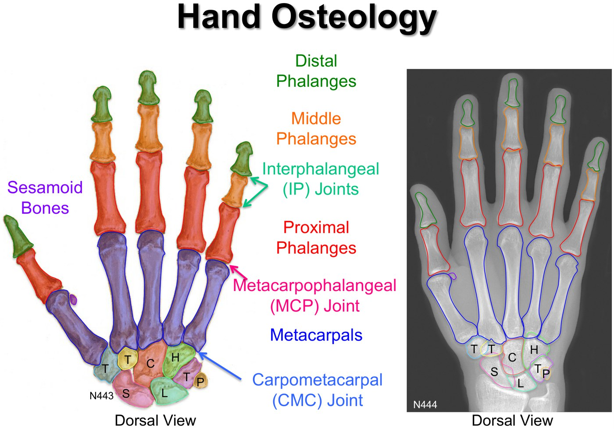
Hand bones and joints. Slide from the deck.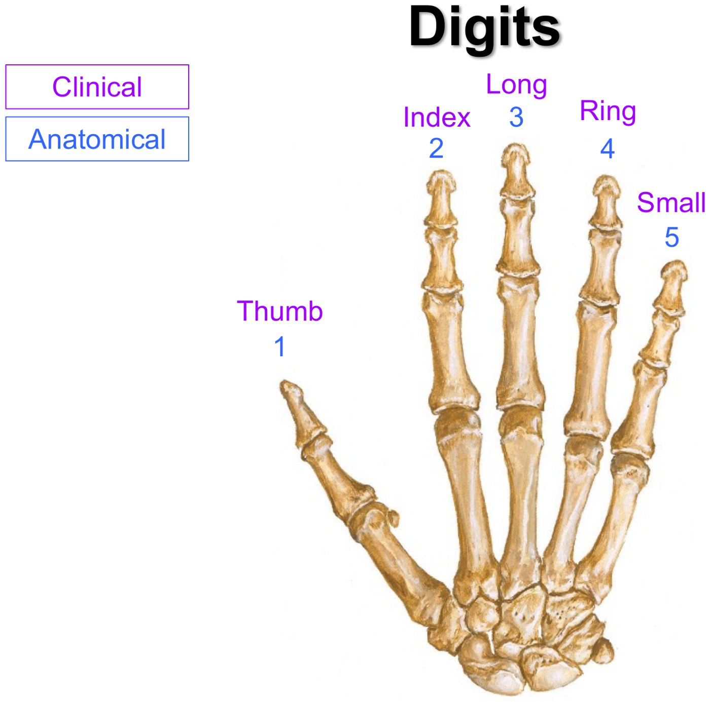
Digits: numbers vs names. Slide from the deck.| Part | Detail |
|---|---|
| Metacarpals | 5, each with a base, shaft and head. The bases meet the carpals; the heads meet the proximal phalanges. |
| Phalanges | 5 proximal, 4 middle, 5 distal: the thumb has 2, so one IP joint; the fingers have 3, so two. Proximal is largest, distal smallest. |
| Sesamoid bones | Bones that develop inside a tendon, giving the muscle more leverage; at the thumb |
| Joints | CMC (carpometacarpal; named by digit, not by carpal), MCP (metacarpophalangeal), IP (interphalangeal) |
| Digits | Anatomically numbered 1–5 from the thumb (lateral to medial); clinically named thumb, index, long, ring, small |
Knowledge checks
Elbow specimen (a photograph, so not shown): A radial collateral ligament, B ulnar collateral ligament, C trochlea, D capitulum, E radius, F bicipital tendon, G ulna, H interosseous membrane, I anular ligament.
Carpals (anterior view of a right hand): the deck gives no answer key, so check yourself with the mnemonic and the trapezium-at-the-thumb rule.
Elbow Joint Problems
Dr. Cassidy's recording: the bone, joint and ligament problems, plus the olecranon bursa.
The Approach
| History | Physical | Management |
|---|---|---|
| Look for patterns; OLDCARS; acute (traumatic, inflammatory) vs chronic (degenerative, overuse); overlay the anatomy (what's medial, what's lateral) | Look (swelling, deformity), feel (where's tender? hot?), move (is ROM restricted?), special tests for specific structures, and don't forget the nerves | Investigations only if they'll help. No red flags → apply the pattern: educate, non-pharmacologic, pharmacologic, interventional. Remember your patient is a person. |
| Location | Differential |
|---|---|
| Anterior | Arthritis (degenerative, post-traumatic, inflammatory); distal biceps tendinopathy |
| Medial | Medial epicondylosis (golfer's elbow); ulnar neuritis/neuropathy; UCL sprain/tear |
| Lateral | Lateral epicondylosis (tennis elbow) |
| Posterior | Olecranon bursitis; arthritis; triceps tendinopathy |
| Anywhere | Fracture |
Joint and ligament problems show up as trouble with range of motion, stability or pain.
Arthritis of the Elbow
| Category | Examples |
|---|---|
| Degenerative | Osteoarthritis: wear and tear |
| Inflammatory | Rheumatoid arthritis, gout, psoriatic arthritis, and infection (septic arthritis), which can happen anywhere |
| Post-traumatic | OA that starts earlier, possibly in a different pattern, because old damage changed how the joint is loaded |
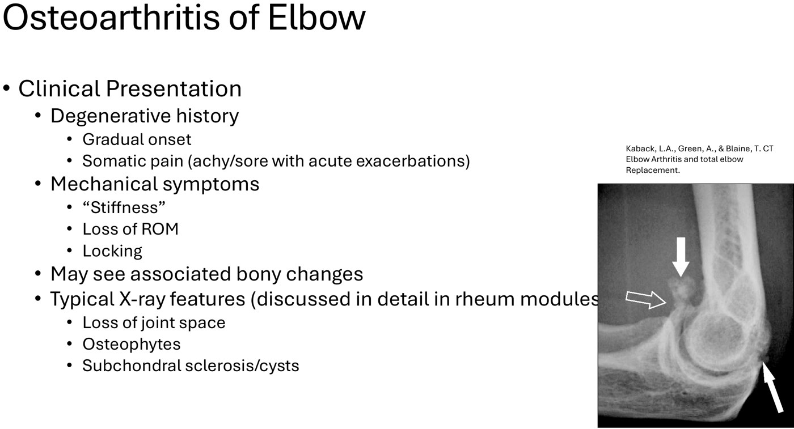
Elbow OA, with osteophytes arrowed on the x-ray. Slide from the deck.| OA of the elbow | |
|---|---|
| History | Gradual onset; somatic pain (achy, sore, with flares); mechanical symptoms: stiffness, loss of ROM, locking (stuck at one angle). Bony lumps may show from outside. |
| X-ray | Loss of joint space; osteophytes (extra bone that blocks the hinge); subchondral sclerosis (whiter) and cysts (darker) just under the articular surface |
| Educate | Name it; expect a long, grumbling course (no cure for OA) |
| Non-pharm | Ice; PT to keep ROM; OT to keep function by modifying tasks |
| Pharm | Topical anti-inflammatories; oral acetaminophen or NSAIDs (mind the side effects); corticosteroid injection |
| Surgery (intolerable, end-stage) | Debridement (clear out what's in the way, e.g. osteophytes) or arthroplasty |
Subluxation and Dislocation
The elbow has two joints that can come apart, and they present very differently: the humeroulnar joint (an elbow dislocation) and the proximal radioulnar joint (nursemaid's elbow).
| Elbow dislocation | Radial head subluxation (nursemaid's / pulled elbow) | |
|---|---|---|
| Who | Anyone; FOOSH is probably the most common mechanism | Almost only children (rare after 5); more common in girls and the left arm |
| Mechanism | Usually posterior (ulna displaced backwards) | Longitudinal traction on the arm (being pulled or swung by the hands). The anular ligament is thinner and weaker distally in children, so the radial head slips out and the ligament is pinched between the head and the capitulum. |
| Picture | Major trauma: capsule and ligament ruptures, skin tears, the ulnar nerve (right behind the joint) and compartment syndrome | Acute pain, then refuses to use the arm, holding it flexed (semi-pronated) against the body |
| Imaging | Only to rule out something else, e.g. a fracture | |
| Treatment | Red flag, not the usual algorithm. Closed reduction (traction, then reduce) and splint at 90°. If soft tissue is interposed or it won't stay reduced → ORIF. | Closed reduction by pronation + extension; no cast or orthosis |
Compartment syndrome, in one line: too much bleeding and swelling inside a fixed fascial compartment cuts off flow, and the tissues inside die. More in the orthopaedic modules.
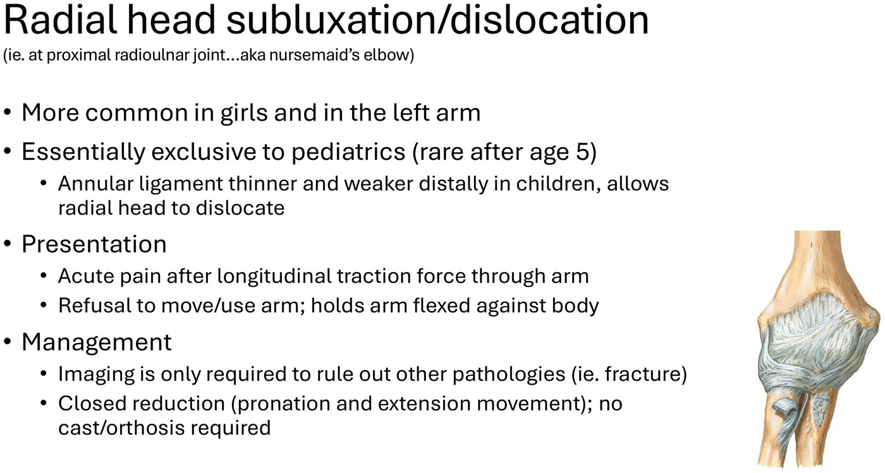
Knowledge check: the toddler who won't colour
A parent holds a 2-year-old's hands while she “walks up” into their arms. Right afterwards she says her arm hurts, cradles it against her body in a semi-prone position, and won't use it to eat or colour. → Nursemaid's elbow (radial head subluxation), treated by closed reduction.
Lessons from the story behind it. A supination–flexion attempt did nothing: no pop and little change. The next morning the paediatric ED used pronation–extension (a little traction while extending and pronating). It works about 80% of the time and is tried first, with supination–flexion as the fallback. Within seconds there was an audible pop, a brief cry, and full use of the arm. They don't discharge until the child reaches with the affected arm (a popsicle). It recurred several times through toddlerhood, the family were taught to reduce it at home, and she grew out of it.
Ulnar Collateral Ligament Injury
| UCL injury | |
|---|---|
| Role of the UCL | Stabilizes the medial elbow |
| Who | Chronic, repetitive overuse: the baseball pitcher, but recreational athletes too |
| Presentation | Anywhere from sprain to complete tear. A sudden tear may pop over the medial elbow; tender medial elbow; on valgus stress (elbow toward the midline, forearm away) there's no end point, just excessive, spongy motion instead of the hard end-feel of an intact ligament. |
| Diagnosis | Probably needs an exam by sports medicine or orthopaedics; MRI may help |
| Educate | Ligaments heal very slowly, if at all, depending on the tear |
| Non-pharm | Ice; PT to strengthen the dynamic stabilizers (the muscles) and retrain proprioception, much of which came from the ligament; orthoses (braces) for external stability |
| Pharm | Pain control only: topical anti-inflammatories, acetaminophen, NSAIDs |
| Surgery | Reconstruction (Tommy John surgery), only if needed for functional goals (e.g. a throwing athlete). A tendon graft (palmaris longus, semitendinosus, others, or a synthetic) replaces the UCL, followed by 1–2 years of PT. |
The pitcher and the Tommy John photographs on these slides are left out.
Olecranon Bursitis
Bursae (over 150 of them) are thin fluid-filled sacs between bone and soft tissue, the skin included, that cushion and let tissues glide. A normal bursa is flat; irritated or inflamed, it fills with fluid and causes pain, focal tenderness, restricted ROM and, if superficial, visible swelling. The olecranon bursa is the most common superficial bursitis.
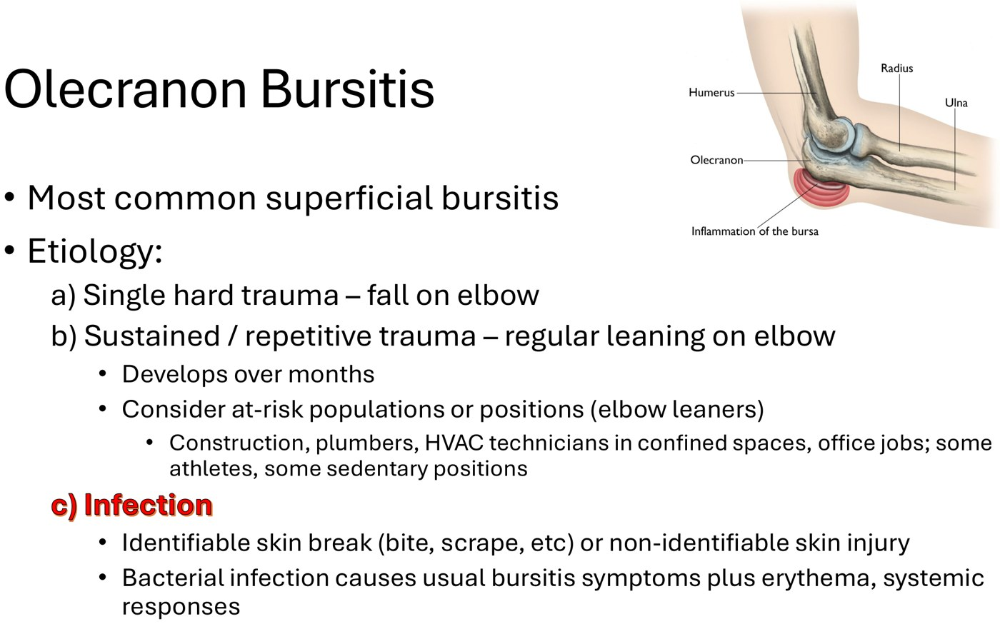
| Cause | Story |
|---|---|
| Single hard trauma | A fall onto the point of the elbow |
| Sustained or repetitive trauma | Regularly leaning on the elbow, building over months: construction, plumbers, HVAC technicians in tight spaces, office desks, some athletes |
| Infection (red flag) | Through an identifiable skin break (bite, scrape) or none you can find. The usual bursitis symptoms plus erythema, heat and possibly systemic signs such as fever. A traumatic bursitis with a skin break can become infected. |
| “Not scary” bursitis | “Bad” (septic) bursitis | |
|---|---|---|
| Looks like | A big, soft lump on the back of the elbow | Much more swollen, red, warm, indurated (skin harder than around it) |
| Work-up | Often none. X-ray if there was trauma; US or MRI if it doesn't behave normally. | Aspirate the bursa |
| Treatment | Benign, often self-limited once the offending factor is removed. RICE; modify the activity; pad the elbow; topical anti-inflammatories ± NSAIDs. Bursectomy if it becomes chronic (a thickened bursa). | Antibiotics chosen appropriately, ± irrigation and debridement if severe or not settling. Bursectomy is also considered if infected. |
A bursitis is a lump on the point of the elbow. If the whole elbow is swollen, think gout or an inflammatory arthropathy instead, which need their own treatment. Rule out fracture with an x-ray if there's real concern. The two bursitis photographs on the slides are described here rather than shown.
Built from Dr. Charys Martin and Dr. Caitlin Cassidy's “Osteology of the Distal Upper Extremity & Clinical Approach to the Elbow” module: the osteology, elbow-problems and knowledge-check recordings, the knowledge checks, the 34-slide detailed deck and Dr. Martin's mini-text. Left out and described in text: the elbow specimen, the pitcher, the Tommy John photographs and the two bursitis photographs. The knowledge-check story is told without names. Notes: the slide's “OLDCARS” is the history mnemonic usually written OLDCARTS. The mini-text puts post-Tommy John rehab at 1–2 years and the slide says “years of PT”; they agree. Caption corrections: osteology (“archeology”), capitulum (“capitulation”, “capital M”), medial epicondyle (“media lap, a condo”), trochlea (“trunk LIA”, “trachea”), trochlear notch (“trocar or notch”), ulna (“owner”, “Alma”), coronoid (“cournoyer”, “quarantine”, “core annoyed”), olecranon (“electron”, “electrode on”), radial tuberosity (“radio to veracity”), hyaline (“highland”), interosseous membrane (“interoffice”, “inner Cassius”), syndesmosis (“cinders”), supination (“superinfection”, “soup nation”), FOOSH (“foolish”, “foot injury”), scaphoid (“scaffold”), lunate (“Loonette”), triquetrum (“trick we troll I”), pisiform (“peasy form”), hamate (“Handmaid's”, “Hammett”), carpals (“carpools”), styloid (“siloed”, “stylized”), metacarpals (“metal carpools”), sesamoid (“sesame”), interphalangeal (“interval angle”), osteophytes (“osteoarthritis”, “osteocytes”), subchondral (“subconscious”, “sub control”), radial head (“Radiohead”), annular ligament (“annual ligament”), end-feel (“and feel”), palmaris longus (“polymerase longus”), olecranon bursitis (“lesser known bursitis”), indurated (“injury”), RICE (“race”) and bursectomy (“vasectomy”).